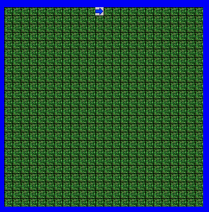
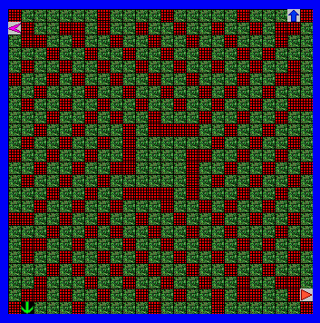
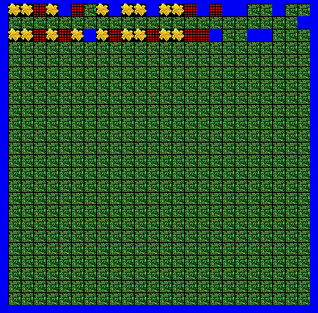
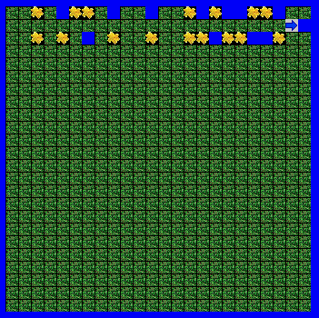

Jeroo Project

Unit 1: Concepts Learned:
- Instantiation: Defining a variable
- Writing a method
- Commands
- Using Copy/Paste to Repeat Commands
This unit was an introduction to Jeroo. It introduced defining a Jeroo, and commanding it to perform actions using behaviors. The screenshots shown are of a project where a Jeroo must break out of some nets and a project where a Jeroo plants flowers in a diamond shape.

 Unit 2: Concepts Learned:
Unit 2: Concepts Learned:
- Nesting Methods within Methods
- Multiple Objects using the Same Functions
- Behaviors and Methods
This unit introduced more complexity, such as functions within functions and multiple Jeroos. The screenshots shown are of four Jeroos breaking out of a structure of nets using one function and of a Jeroo using flowers to make numbers.
Unit 3: Concepts Learned:
- While Loops
- Conditions
- Booleans
This unit introduced loops and conditions to repeat actions, as well as making them more adaptable to changing situations. The screenshots shown are of a Jeroo using Boolean conditions to pick up flowers and move around the island and of a Jeroo freeing his friends from nets using a loop.


Unit 4: Concepts Learned:
- If
- If/Else
- Else If
- Nesting Ifs
- Recursion
This unit put together everything from the previous units, using Booleans, If/Else, and Recursion to produce very powerful methods. The screenshots shown are a function written to progress a Jeroo along any maze or alleyway without falling into water and a Jeroo walking along an alleyway and picking up and planting flowers when it passes them by.